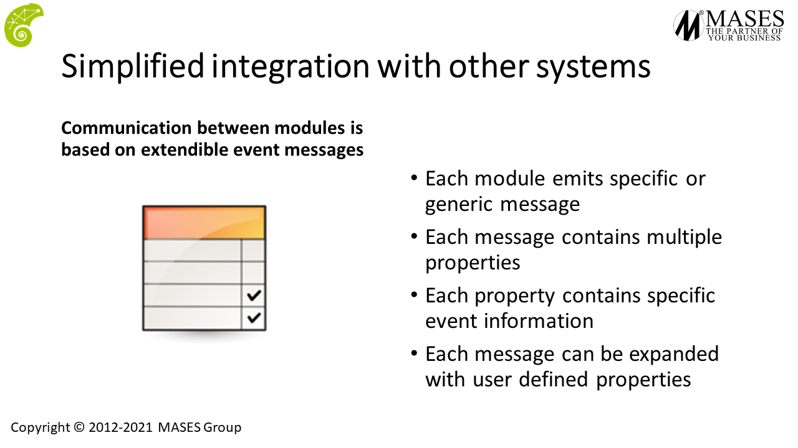
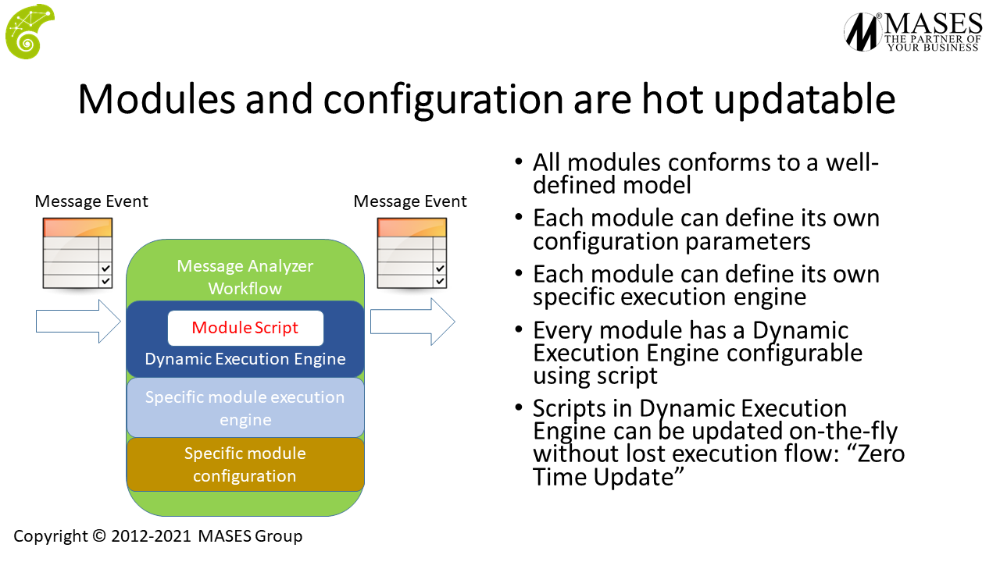
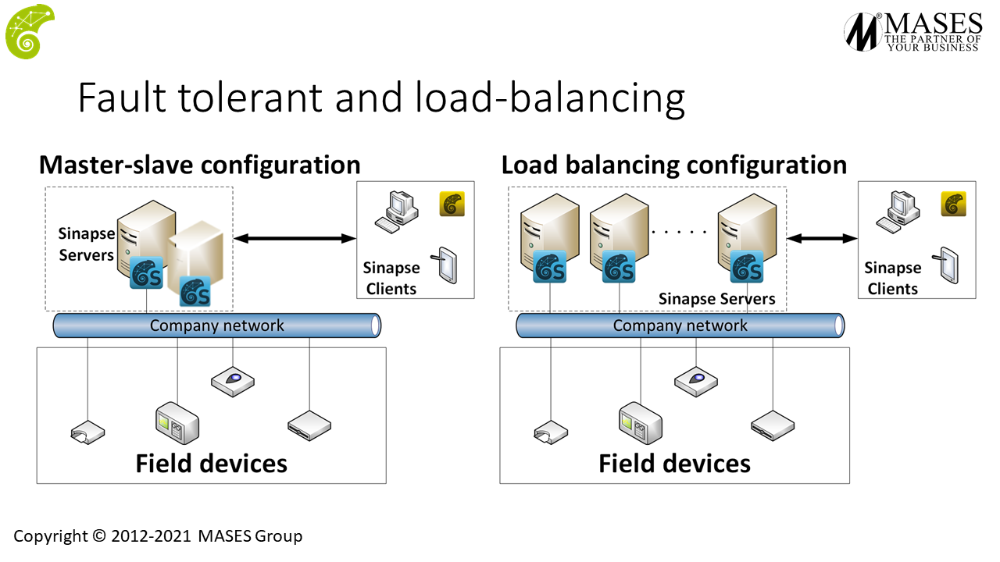

Sinapse platform: the definitive solution for Agile development
We use Data Distribution Manager as the core of Sinapse High Avalailablity. Sinapse is able to distribute, across multiple servers, workflows execution, balance load conditions and can recover from servers failure using a distributed system based on Data Distribution Manager.
A simple overview, from our presentations, is as the following one:

To be interoperable Sinapse front-end is based on OPC-UA protocol, the backend is based on a specific version of Data Distribution Manager.
Messages as the glue
Sinapse platform is genral purpose module based platform: modules communication is based on serializable structured messages. All Sinapse modules are insulated and doesn't know anthing about other modules, there is a loosely-coupled linkage between them: modules use serializable messages to exchange information between them. During run-time, Sinapse core make aware a module about the message. These messages are exchanged from the modules of Sinapse platform using the reliable common bus.
An overview of a single message is as the following figure:

Dynamic processor
The messages are processed using a multi-level, multiple language configurable engine:

The engine receives in input the message, analyze it and output one, or more resulting messages. The engine hosts a scriptable engine and scripts can be updated at run-time.
Standalone versus multi-server
The messages to, and from, modules are exchanged using the multi-server message bus and disptached to all Sinapse servers involved in the configuration. In a sandalone condition, oly one server is in execution and dos not need the full bus features, while in other conditions the multi-server bus is mandatory.
Standalone
Below two figures which describes the above sentence within a production plant.Starting, in a simple scenario, with a single Sinapse server:

Fault tolerance/Load balancing
It is possible to add High Availability adding more servers in the configuration:

The above servers communicates each other over a specific version of Data Distribution Manager.
Workflows
Below an explanation of what happens when multiple servers are involved in a workflows. All workflows in the figures can be spawned across balanced servers for High Availability.
Single server workflow
Starting from a single server, the following figure shows a simple workflow which link a PLC to a database:

Multiple servers workflow
Starting from the previous workflow, if each server executes its own workflow, they can be chained along multiple servers creating a multiple-server workflow:

If the article is interesting and want to know more on Sinapse platform go on Sinapse platform website.